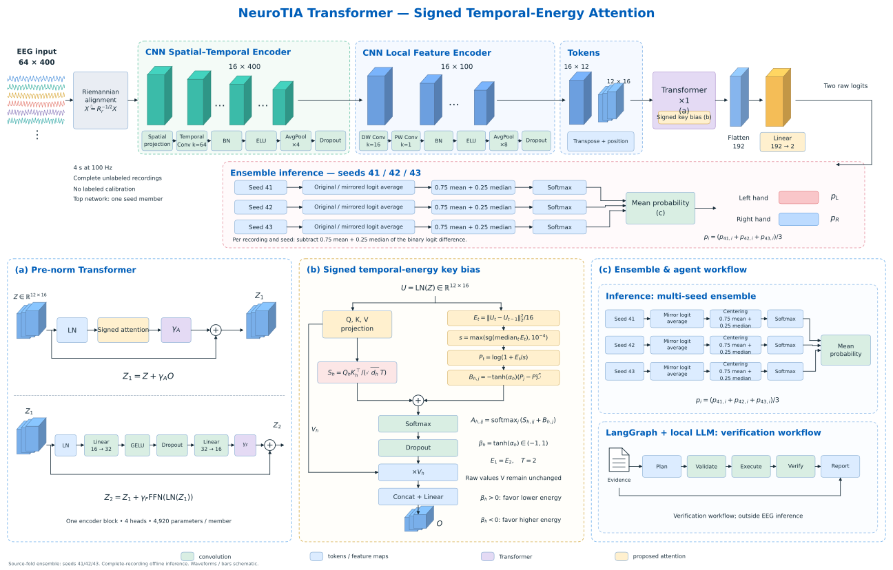

Attention comparison
Same 1,395 source-validation trials · accuracy (%)
MOTOR-IMAGERY EEG CLASSIFICATION
Same 1,395 source-validation trials · accuracy (%)
Rows: actual class · columns: predicted class
| Class / average | Precision | Recall | F1 score | Support |
|---|
Reference seed42 · cross-entropy · training loss includes augmentation
Reference seed42 · recorded at epochs 20, 40 and 60 · selected checkpoint: epoch 20
Test loss/accuracy curves and training accuracy were not recorded and are unavailable.
Descriptive confidence vs observed accuracy on this selected source fold
Maximum class probability · all validation trials
Individual accuracy · bars share a 0–100% scale; hover for exact counts.
| Participant | Trials | Correct | Accuracy | AUC |
|---|
64 × 400 EEG → CNN Feature Encoder → Transformer attention → left / right logits

True vector artwork. Verified source-fold ensemble: seeds 41, 42 and 43.
Local Qwen3-1.7B plans verification and reports Python measurements; it does not classify EEG. Recorded calls below concern the earlier seed42 snapshot, not the new ensemble.
Recorded calls. Opening this page does not call an LLM. Responses are commentary, with scope checks shown alongside.